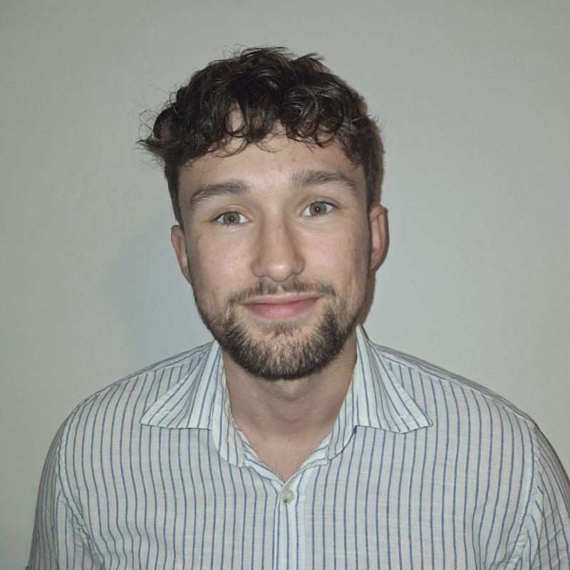

From mechanics to control, I build robotic systems.
Mechatronics engineer trained at INSA Rennes. I cover mechanics, electronics, control and software. I design, integrate and test complete robotic systems.
GRADUATING AUG 2026OPEN IN FRANCE & USFR native · EN C1

Selected work
Projects
Neutron IT · Startup contract
Custom UAV, full mechatronic build
Contract for a startup. Working from a fixed spec, I designed and built a complete drone. I ran the whole cycle, from requirements and component selection to autonomous-flight tests. I imagined and drew the custom parts in CAD, did the assembly, the wiring, the soldering of the electronics and integrated an onboard computer. I wrote the flight control and handled the full hardware integration.
Project carried out during my internship at DGA. A guidance, navigation and control system that detects, tracks and intercepts a moving target from a single camera. Target detection with an AI algorithm, estimation of its position and velocity with an Extended Kalman Filter, then development of guidance laws integrating the EKF outputs, from cruise flight to terminal guidance. Validated from simulation to flight.
Interception 100% on static targets · moving targets ≤ 5 m/s · 20 Hz control loop · Gazebo · PX4 · ROS 2
Project carried out during my internship at DGA. Control laws that keep several drones in formation along a trajectory. I developed and compared 2 guidance laws. A Leader-Follower, where each drone holds a fixed position relative to the leader, corrected by a PID. And a swarm guidance law, based on attraction and repulsion potentials that set both the shape of the formation and the pull toward the trajectory. Validated in simulation then on real drones in an OptiTrack motion-capture arena.
Internship at EXAIL on a bench that makes fiber Bragg gratings and had quality defects. I compared it with a reference bench that worked well to trace the defects, then designed and machined new mechanical parts in SolidWorks that fixed them. I also rebuilt and reprogrammed the electronics of the bench pneumatic clamps that hold the fiber, and added automatic focusing of the bench UV laser beam, until then set by hand. Mechanical design, hardware integration and control.
DGA — Direction Générale de l'ArmementFinal-year engineering internship · 6 months · 2026 · Bruz, FR
Development and integration of guidance and control laws (ROS 2, PX4, Python) for vision-based autonomous interception (AI, EKF) and swarm flight.
Neutron ITStartup contract · 2025–2026 · FR
End-to-end design of a modular AI drone for a startup. Sizing and component selection from the spec, CAD modeling and 3D printing, hardware assembly, software integration and autonomous-flight validation.
EXAILInternship · 6 months · 2025 · Lannion, FR
Automation of a photo-inscription bench (FBG). SolidWorks design of mechanical parts validated by 3D printing. Selection of precision components (stages, micrometric screws). Improvement of the LabVIEW operator interface.